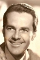
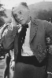

Country:United States, 77 minutes
Spoken languages:English
Genres:Horror
Director(s):Sam Newfield
Writer(s):Fred Myton
Video Codec:Unknown
Number: 94


Certification:NR
Storyline:
A mad scientist changes his simple-minded handyman into a werewolf in order to prove his supposedly crazy scientific theories - and exact revenge.
Cast:  

Medium: Original DVD,
Comments: Part of: 100 Greatest Horror Classics
Loaned: No
Aspect ratio: Unknown